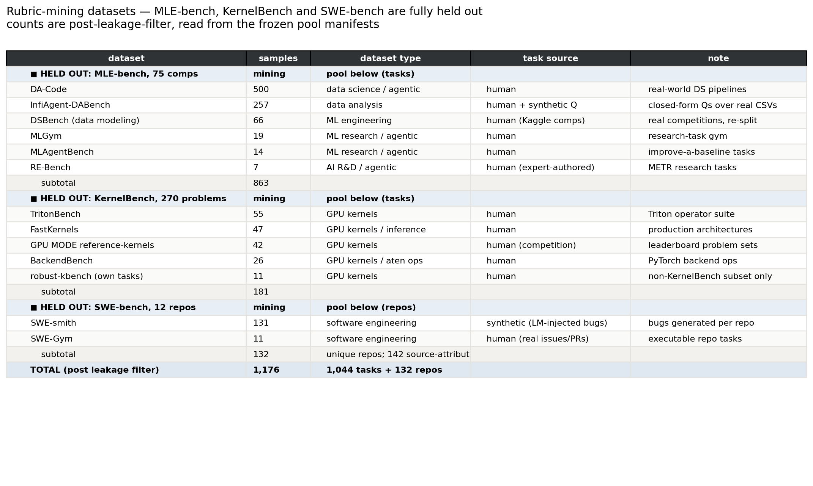

Rubric-grounded code world models — evaluation roadmap
MLE-bench, KernelBench and SWE-bench are fully held out; rubrics are mined only from external datasets. What is measured, what is built, what is next.
1Standard evaluation practice for MLE agentsexplained
MLE-bench is the reference protocol. An agent is given a Kaggle competition's
public data and a task description, and must write code that produces a
submission.csv. Grading is not a model judgement: the submission is scored
by the competition's own metric against a held-out private split, then compared to that
competition's real historical leaderboard.
- Headline metric — medal rate. The percentage of competitions where the submission clears the actual bronze / silver / gold thresholds. Secondary: above-median rate, and raw metric values per competition.
- Fixed budget per attempt (commonly ~24 h wall clock and a fixed machine), no internet, no reading the leaderboard. Multiple seeds are run because agent variance is large; results are reported as pass@1 or pass@k.
- Official grader only. Numbers come from
mlebench.grade_csvwith medal thresholds bundled per competition — not from a re-implementation. - Subsets exist for cost. "Lite" (22 competitions) is the common cheap configuration; the full set is 75.
- Contamination is a live concern. Competitions predate model cutoffs, so solutions may be memorised. This is why a mining/eval split matters for us: any rubric mined from a competition we later evaluate on would be a second, subtler leak.
Sources
- MLE-bench: Evaluating Machine Learning Agents on Machine Learning Engineering — Chan et al., OpenAI, arXiv:2410.07095. The protocol above: 75 Kaggle competitions, official-metric grading against a held-out split, medal thresholds taken from each competition's real leaderboard percentiles (so a medal means a comparable level of achievement across competitions of different size). (OpenReview PDF · announcement)
- openai/mle-bench — the grader we call
(
mlebench.grade_csv), the bundled per-competition medal thresholds, and the Lite / low split files. Reported numbers in this project come from this code, never a re-implementation. - Reference results for calibration: the strongest setup in the paper (o1-preview with AIDE scaffolding) reaches a bronze medal or better in 16.9% of competitions at pass@1, rising to 34.1% at pass@8 — which is why multiple seeds are standard practice and why single-run agent comparisons are noisy.
- AIDE: AI-Driven Exploration in the Space of Code — the scaffolding used for the strongest MLE-bench results, i.e. the search-based baseline our wall-clock arms should eventually be compared against.
How our measurement differs, and why. Our wall-clock experiment is a refinement task, not a from-scratch solve: each arm starts from an existing scored program and gets 30 minutes to improve it. Medal transitions are far too rare at that budget to discriminate between feedback channels, so we report % of programs improved against their own baseline, still on the official grader. Medal rate is the number that connects to published MLE-bench results, and we do not yet have it — see §6.
2Benchmarks used by this literaturetable
| benchmark | samples | type | role for us |
|---|---|---|---|
| MLE-bench | 75 competitions | ML engineering, end-to-end | held out — eval only |
| KernelBench | 270 problems (L1 100 / L2 100 / L3 50 / L4 20) | GPU kernel generation | held out — eval only |
| SWE-bench | 2,294 instances over 12 repos | software engineering (issue → patch) | held out — eval only |
| DSBench | 74 modeling + 466 analysis | data science, Kaggle-derived | mining pool (modeling half) |
| DA-Code | 500 tasks | data science / agentic | mining pool |
| InfiAgent-DABench | 257 questions over 52 CSVs | data analysis, closed-form | mining pool |
| MLAgentBench | 13–14 tasks | ML research / agentic | mining pool |
| MLGym | 13 tasks (19 configs) | ML research gym | mining pool |
| RE-Bench | 7 tasks | AI R&D, expert-authored | mining pool |
| TritonBench | 55 operator suites | Triton kernels | mining pool |
| GPU MODE reference-kernels | 42 problems | GPU kernel competition | mining pool |
| BackendBench | 26 op groups | PyTorch aten ops | mining pool |
| SWE-Gym | 2,438 instances over 11 repos | software engineering | mining pool |
| SWE-smith | 133 repos (synthetic bugs) | software engineering | mining pool |
Sources
- MLE-bench arXiv:2410.07095 · KernelBench arXiv:2502.10517 · SWE-bench arXiv:2310.06770
- DSBench arXiv:2409.07703 · DA-Code arXiv:2504.04808 · InfiAgent-DABench arXiv:2401.05507
- MLAgentBench arXiv:2310.03302 · MLGym arXiv:2502.14499 · RE-Bench arXiv:2411.15114
- TritonBench arXiv:2502.14752 · FastKernels arXiv:2605.23215 · GPU MODE reference-kernels · BackendBench
- SWE-Gym arXiv:2412.21139 · SWE-smith arXiv:2504.21798 · R2E-Gym arXiv:2504.07164
Counts marked as suites / configs / op groups are our own enumeration of the released repositories at the pinned SHAs, which can differ from a paper's headline figure (a paper may count individual operators where the repo ships grouped suites). Held-out sizes are the published ones.
3Training (mining) datasetstable
13 datasets, 1,176 mining units — all post-leakage-filter. Excluded and verified: 9 exact MLE-bench competitions found inside DSBench and MLAgentBench, 200 constant-perturbed KernelBench copies inside robust-kbench, and flask + sympy inside SWE-smith's own repo profiles.

Everything is human-authored except SWE-smith, whose bugs are LM-injected — the one large synthetic block, and worth stating in any writeup since synthetic bugs need not resemble real failure modes. SWE rows count repositories, not task instances.
4End-to-end accuracy, current statepartial

Five arms, 1800 s each, same budget; every arm starts from an already-scored program and is measured by the official grader on whether it beat that program's own score.
- The rubric arms beat the unguided control (0–10%) by 2–3×, so the rubric channel carries real signal.
- They lose to interpreter-only, pooled 23.0% vs 38.8%. The interpreter never breaks a program; the world model breaks a substantial fraction, which removes its chance to score at all.
- No scaling effect. World model across 151→708 rubrics: 33, 24, 18, 20, 25%. Flat, while rubric quality over the same stages rose from 0.00 to 0.38 error precision and 0.00 to 0.48 recall. Quality improved; utility did not follow.
Read bars within a stage only. Each stage's eval set is a nested prefix, so later stages include harder competitions — about half the interpreter's apparent 52→31% decline is task mix, not degradation. On the 5 competitions common to every stage the same arm swings ±11 points at fixed sample size. Stages 3–5 are also incomplete (15/17, 22/24, 26/29), and the missing competitions are the hard ones.
5Curation speedmeasured
| regime | rubrics / pod-hour | conditions |
|---|---|---|
| Production MLE-bench competitions | 4.5 | 3600 s exec cap, ≤40 programs, image/DICOM comps; 11 runs, 188 rubrics over 41.5 pod-hours |
| Light external tasks (DSBench tabular) | 76–112 | 900 s cap, ≤8 programs |
| GPU kernel tasks | 53 | 900 s cap, ≤8 programs, T4 |
Throughput is dominated by task execution cost, not by curation itself — a rubric requires a program that actually ran (and, for the performance family, one that was graded twice). Parallel pods multiply this linearly: the fleet runs one competition per pod.
Planning number for §6: 1,000 rubrics at the production rate is ≈220 pod-hours, i.e. ~7 h on 30 parallel pods. On the lighter external datasets that dominate the mining pool, materially less.
6Next: 1,000 rubrics uniformly across the mining poolnot started
Curate 1,000 rubrics uniformly distributed over all 13 mining datasets, then evaluate. Deliverable is a scaling-law figure:
- x-axis rubric count · y-axis end-to-end accuracy
- companion panels: error / performance × precision / recall
Two things this run should fix that the current e2e cannot answer:
- Hold the eval set fixed across rubric counts. The present design varies library size and task difficulty together, so its horizontal axis is not a scaling curve.
- Capture medal rate and above-median. Both are computed by the harness but were absent from the stage campaign — the medal fields postdate that code snapshot, and the per-attempt rows were dropped by an artifact-glob bug. Both are fixed now, so a rerun yields the metric that is comparable to published MLE-bench numbers.
7Next: collect on the held-out-safe pools, then re-run e2enot started
Collection now runs end-to-end on the external domains (verified: DSBench 5 and 4 performance rubrics, kernel 6, plus error rubrics in both). The sequence:
- Mine across DA-Code (500), DSBench (66), InfiAgent-DABench (257), TritonBench
(55), reference-kernels (42), BackendBench (26), SWE-Gym / SWE-smith — building
rubric_db_mle,rubric_db_kernel,rubric_db_swe. - Audit each database with
build_domain_db.py, which traces every rubric to its source task and fails the build on a held-out origin. - Evaluate on the fully held-out benchmarks — MLE-bench (75), KernelBench (270), SWE-bench (12 repos) — giving leaderboard-honest numbers for the first time.
Two known gaps to settle first, both measurement decisions rather than plumbing: kernel and SWE failures surface inside the grader (wrong results, failing tests) while error rubrics are mined from the interpreter, so error-rubric yield in those domains is limited to script-level defects; and SWE error truth needs extending from exception class to failing-test identity.